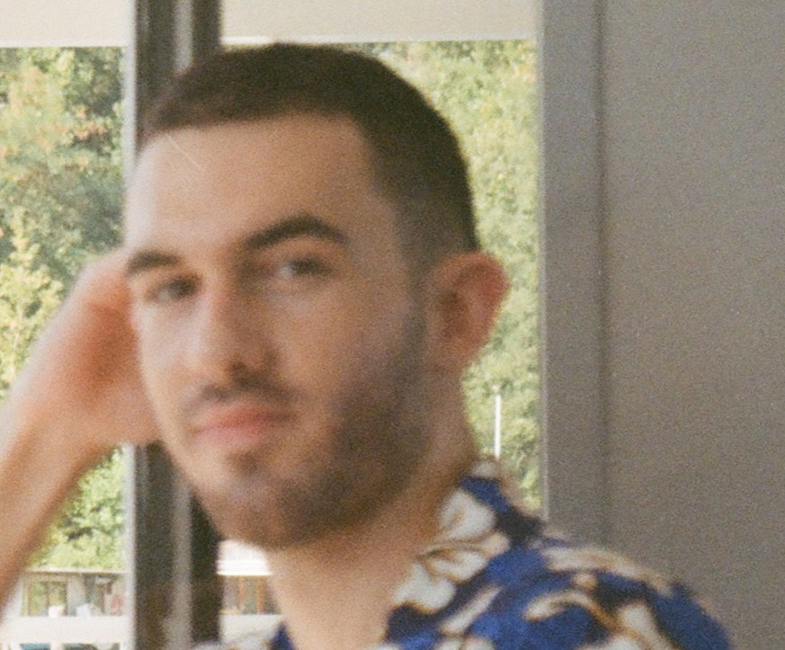

Tobias Balk, born in 1998, is a multidisciplinary artist based in Berlin, Germany, originally from a small rural city in Argentina. His creative practice started with drawing on paper, and later evolved to include video, digital image manipulation, analog photography, acrylic painting, and writing.
He began developing his painting skill at Atelier Aistesis in Buenos Aires, Argentina; in 2018.
Tobias lives in Berlin since 2020.
In Berlin, he participated in the group exhibition “Nevermind the Galleries”, organized by the Drugstore collective, on 11.09.2021; as well as the group exhibition “Cycles” organized by the Blue Star collective, Berlin 03.10.2021, showing paintings, prints, and ceramic objects.
Tobias is in alterations tailoring training since 2024, exploring the medium of textiles for the first time as a result.